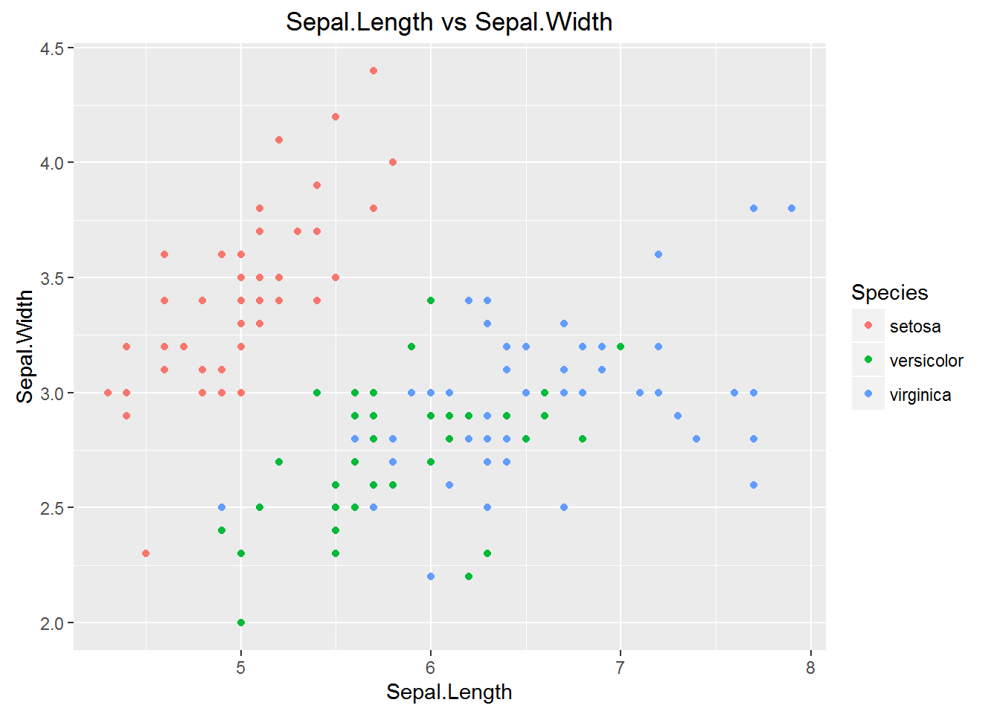

This is a quick exploration of simple classification using caret with Edgar Anderson’s famous Iris data set.
The goal of the project is to utilise caret alongside a variety of machine learning algorithms to correctly classify irises into their species group whilst casually comparing the different algorithms.
Anderson’s Iris data set gives the measurements in centimeters of the 4 predictors, as well as the Species:
summary(iris)## Sepal.Length Sepal.Width Petal.Length Petal.Width
## Min. :4.300 Min. :2.000 Min. :1.000 Min. :0.100
## 1st Qu.:5.100 1st Qu.:2.800 1st Qu.:1.600 1st Qu.:0.300
## Median :5.800 Median :3.000 Median :4.350 Median :1.300
## Mean :5.843 Mean :3.057 Mean :3.758 Mean :1.199
## 3rd Qu.:6.400 3rd Qu.:3.300 3rd Qu.:5.100 3rd Qu.:1.800
## Max. :7.900 Max. :4.400 Max. :6.900 Max. :2.500
## Species
## setosa :50
## versicolor:50
## virginica :50
##
##
## The iris data set was chosen partly as it requires no pre-processing or transformation, which is ideal for quickly looking at caret and classification, and also partly because it is a classic classification data set.
First we will create a Pairwise Correlation Matrix to explore the variables and look for any relationships.
ggpairs(iris,
colour='Species',
alpha=0.4,
title = "Anderson's Iris Data -- 3 species")These pairwise scatterplots show that there is strong correlation between Petal.Length and Petal.Width. And also correlation between Sepal.Length and Petal.Length, and also Sepal.Length with Petal.Width.
We can also see a degree of separation between iris setosa and the other Irises, but there is no clear separation between iris versicolor and iris virginica
ggplot(iris, aes(x=Sepal.Length, y=Sepal.Width, colour=Species)) +
geom_point() +
ggtitle("Sepal.Length vs Sepal.Width")
Comparing Sepal.Width and Sepal.Length whilst colouring according to species shows good separation between iris setosa and the other iris species, but again only minor difference between iris versicolor and iris virginica.
ggplot(iris, aes(x=Petal.Width, y=Petal.Length, colour=Species)) +
geom_point() +
ggtitle("Petal.Length vs Petal.Width")From this graph, looking at the Petal.Width vs Petal.Length and colouring according to species, we can see both strong correlation and also pretty good separation betwen the 3 species, except for a few uncertain points between the blue/green groups.
We’ll build some models and use them to classify species.
First we need to split our data set in test and training sets.
The function createDataPartition can be used to create a stratified random sample of the data.
inTrainingSet <- createDataPartition(iris$Species, p = .50, list = FALSE)
irisTrain <- iris[ inTrainingSet,]
irisTest <- iris[ -inTrainingSet,]We now can use caret with a standard random forest method to create a model for clasifying iris species.
m.rf <- train( Species ~ ., data=irisTrain, method="rf" )Let’s check our model by using it on the unseen test data to predict the species based on the other variables.
pred.rf <- predict(m.rf, irisTest)Now we can view a confusion matrix to see how well our random forest classified the data.
cm.rf <- confusionMatrix(pred.rf, irisTest$Species)
kable(cm.rf$table)| setosa | versicolor | virginica | |
|---|---|---|---|
| setosa | 25 | 0 | 0 |
| versicolor | 0 | 24 | 1 |
| virginica | 0 | 1 | 24 |
This is pretty good, classifying all 25/25 of the iris setosa data correctly, only misclassifying 1/25 iris versicolor as iris virginica, and misclassifying 1/25 iris virginica as iris versicolor
Now we will try classifying with the C5.0 algorithm.
m.C50 <- train(Species ~ ., data=irisTrain, method="C5.0" )
pred.C50 <- predict(m.C50, irisTest)
cm.C50 <- confusionMatrix(pred.C50, irisTest$Species)
kable(cm.C50$table)| setosa | versicolor | virginica | |
|---|---|---|---|
| setosa | 23 | 0 | 0 |
| versicolor | 2 | 24 | 1 |
| virginica | 0 | 1 | 24 |
m.nb <- train(Species~., data=irisTrain, method="nb")
pred.nb <- predict(m.nb, irisTest)
cm.nb <- confusionMatrix(pred.nb, irisTest$Species)
kable(cm.nb$table)| setosa | versicolor | virginica | |
|---|---|---|---|
| setosa | 25 | 0 | 0 |
| versicolor | 0 | 24 | 2 |
| virginica | 0 | 1 | 23 |
We will now add k-fold (in this case 10-fold) cross validation to create our naive bayes model.
train_control <- trainControl(method="cv", number=10)
m.nbkf <- train(Species~., data=irisTrain, trControl=train_control, method="nb")
pred.nbkf <- predict(m.nbkf, irisTest)
cm.nbkf <- confusionMatrix(pred.nbkf, irisTest$Species)
kable(cm.nbkf$table)| setosa | versicolor | virginica | |
|---|---|---|---|
| setosa | 25 | 0 | 0 |
| versicolor | 0 | 24 | 2 |
| virginica | 0 | 1 | 23 |
m.knn <- train(Species~., data=irisTrain, method="knn")
pred.knn <- predict(m.knn, irisTest)
cm.knn <- confusionMatrix(pred.knn, irisTest$Species)
kable(cm.knn$table)| setosa | versicolor | virginica | |
|---|---|---|---|
| setosa | 25 | 0 | 0 |
| versicolor | 0 | 25 | 2 |
| virginica | 0 | 0 | 23 |
m.nnet <- train(Species~.,data=irisTrain,method="nnet", trace=FALSE)
pred.nnet <- predict(m.nnet, irisTest)
cm.nnet <- confusionMatrix(pred.nnet, irisTest$Species)
kable(cm.nnet$table)| setosa | versicolor | virginica | |
|---|---|---|---|
| setosa | 25 | 0 | 0 |
| versicolor | 0 | 24 | 0 |
| virginica | 0 | 1 | 25 |
tc <- trainControl(method="boot",number=25)
m.nnet.bs <- train(Species~.,data=irisTrain,method="nnet",trControl=tc, trace=FALSE)
pred.nnet.bs <- predict(m.nnet.bs, irisTest)
cm.nnet.bs <- confusionMatrix(pred.nnet.bs, irisTest$Species)
kable(cm.nnet.bs$table)| setosa | versicolor | virginica | |
|---|---|---|---|
| setosa | 25 | 0 | 0 |
| versicolor | 0 | 24 | 0 |
| virginica | 0 | 1 | 25 |
tc <- trainControl(method="LOOCV", number=25)
m.rf.bs <- train(Species~.,data=irisTrain,method="rf",trControl=tc, trace=FALSE)
pred.rf.bs <- predict(m.rf.bs, irisTest)
cm.rf.bs <- confusionMatrix(pred.rf.bs, irisTest$Species)
kable(cm.rf.bs$table)| setosa | versicolor | virginica | |
|---|---|---|---|
| setosa | 25 | 0 | 0 |
| versicolor | 0 | 24 | 1 |
| virginica | 0 | 1 | 24 |
m.nnet.pp <- train(Species~.,
data=irisTrain,
method="nnet",
preProcess=c("BoxCox", "center", "scale", "pca"),
trace=FALSE)
pred.nnet.pp <- predict(m.nnet.pp, irisTest)
cm.nnet.pp <- confusionMatrix(pred.nnet.pp, irisTest$Species)
kable(cm.nnet.pp$table)| setosa | versicolor | virginica | |
|---|---|---|---|
| setosa | 25 | 0 | 0 |
| versicolor | 0 | 23 | 5 |
| virginica | 0 | 2 | 20 |
Having used a variety of different models to classify the iris data set, we can now attempt to compare their performance. Comparing confusion matrices isn’t entirelty straight-forward as models perform differently in different areas, some optimising for specificity, some for sensitivity, or for some other metric. I have chosen to use Matthews Correlation Coefficient which gives a single number in the range -1 to +1, and is a correlation coefficient between the observed and predicted binary classifications.
results <- results %>% arrange(desc(MCC))
kable(results)| Name | MCC |
|---|---|
| Neural Net | 0.9802614 |
| Neural Net w Boot | 0.9802614 |
| KNN | 0.9610256 |
| Random Forest | 0.9600000 |
| Random Forest w LOOCV | 0.9600000 |
| Naive Bayes | 0.9402508 |
| Naive Bayes k-fold | 0.9402508 |
| C5.0 | 0.9209829 |
| Neural Net PP | 0.8620715 |
gg <-
ggplot(results, aes(x=Name, y=MCC, fill=Name)) +
geom_bar(stat="identity") +
ggtitle("Comparison of Classification Methods") +
theme(axis.text.x=element_blank(),
axis.title.x=element_blank())
print(gg)From the table and graph it is possible to see that all the models performed similarly, in the range 0.88 - 0.98. But the Neural Network performed the best MCC=0.98, followed by KNN with MCC=0.96.
Another point of interest is that the worst model was also the neural network, but with pre-processed data using BoxCox, centering, scaling and PCA which implies that innapropriate pre-processing can be worse than none.